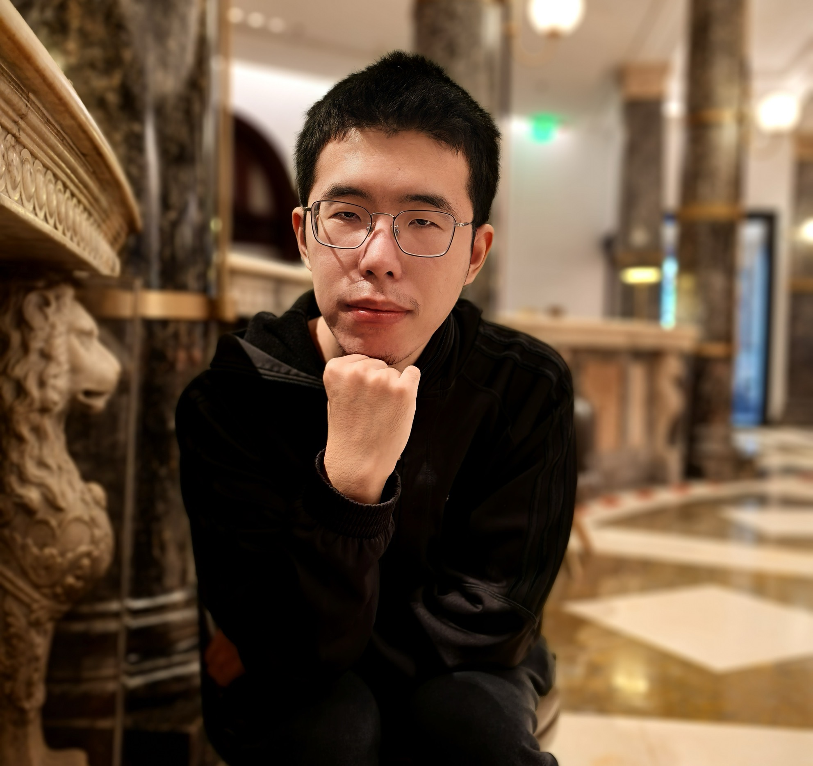

Mingyu Luo
Postdoctoral Researcher
Department of Ecology and Evolutionary Biology
University of California, Los Angeles
618 Charles E. Young Drive South, Los Angeles, CA 90095
About
I am a postdoctoral researcher in the Department of Ecology and Evolutionary Biology at UCLA, where I am fortunate to be advised by Dr. Chuliang Song. I study the theory of ecosystem stability, the coarse-graining of ecological models, the temporal dynamics of ecological systems, and related questions in theoretical and statistical ecology.
I received my Ph.D. in Ecology from Peking University in 2024, advised by Prof. Shaopeng Wang, after a B.S. in Mathematics there in 2019. That combination of mathematical and statistical training with ecological theory shapes how I work: I build analytical frameworks for ecological questions, then test them against data.
My research draws on a range of quantitative tools, including spectral analysis, random matrix theory, and Bayesian statistics, to understand how ecological systems are structured and how they persist. Much of it is collaborative. Working with colleagues in food web ecology, metacommunity dynamics, forest ecology, climate change biology, and biodiversity theory, I connect theory to long-term empirical data to ask how biodiversity is maintained and how ecosystems function in a changing world.
Education & Experience
Postdoctoral Researcher
University of California, Los Angeles (UCLA)
Department of Ecology and Evolutionary Biology • Advisor: Dr. Chuliang Song
Ph.D. in Ecology
Peking University
College of Urban and Environmental Sciences, Institute of Ecology • Advisor: Prof. Shaopeng Wang
B.S. in Mathematics
Peking University
School of Mathematical Sciences
Research Programs
Theme 1: Frequency-domain analysis of population fluctuations 2019–present
Frequency-domain (spectral) analysis is a classic tool in time series analysis. My doctoral research extended it to ecological dynamics, first by examining how dispersal affects spatial synchrony at different timescales (Luo et al. 2021, Oikos), then by turning to competitive communities, where I tested theoretical predictions against grassland biodiversity experiments (Luo et al. 2025, Nature Ecology & Evolution). In that paper I derived a formula showing how frequency-domain patterns shape the statistics computed from finite-length time series, through weighted averaging. Together, these studies advance the frequency-domain theory of stochastic population dynamics and show that the timescale of observation can change ecological conclusions qualitatively, not merely add uncertainty, which matters for how ecological time series are interpreted.
Theme 2: Species coexistence in structured communities 2020–2022
Metapopulation theory gives simple mathematical criteria for when a population persists in a fragmented landscape; extended to two competing species, it yields the well-known competition–colonization trade-off. I took this further in two steps: fitting a long-term dataset of three competing Daphnia species with Bayesian methods, then deriving mathematical criteria for multispecies coexistence in fragmented landscapes (Luo et al. 2022, PNAS). The work brings together metacommunity theory, species coexistence theory, structural stability analysis, and Bayesian statistics.
Theme 3: Statistical model of food web structure 2021–2022
Food web structure shapes ecosystem dynamics, and body size is one of its main organizing principles: the allometric scaling of feeding relationships offers a quantitative handle on how energy flows through ecosystems. I developed a flexible probabilistic model that predicts foraging links from biotic factors (predator and prey body sizes) and abiotic drivers such as temperature. Fitting it to a global food web dataset with Bayesian methods and scalable MCMC algorithms, we showed how foraging patterns, including optimal prey–predator size ratios and feeding ranges, vary systematically with predator size and temperature across aquatic and terrestrial ecosystems (Li, Luo et al. 2023, Ecology Letters).
Theme 4: Ecosystem complexity, resilience, invariability, and productivity 2023–present
Whether complexity stabilizes or destabilizes ecosystems is one of ecology's oldest open questions. Part of the difficulty is that complexity has opposing effects on two key stability measures: asymptotic resilience and temporal invariability. In my doctoral thesis I used random matrix theory to derive analytical predictions for temporal invariability in complex ecosystems, a counterpart to May's classic result on complexity and resilience. I am now moving beyond classical random community matrices to study how resilience and invariability relate under more realistic ecological scenarios, with the aim of clarifying how different stability measures fit together (doctoral thesis; Luo et al., under review).
Collaborative Research
I contribute mathematical and statistical expertise to collaborative projects, often leading the modeling, numerical simulation, and statistical analysis. These projects range from forest biomass accumulation and climate impacts to aquatic food web structure and Daphnia metacommunities. I welcome new collaborations in ecology, computational biology, and related fields, whether they build on the themes above or head somewhere entirely new. If you have a question where theory might help, please get in touch.
Selected Publications
*Corresponding author | #Co-first authors | See Google Scholar for the complete publication list
Teaching & Outreach
Teaching
-
Teaching Assistant, Ecological Statistics Spring 2020Peking University • Instructor: Prof. Shaopeng Wang • Designed lecture materials and problem sets Topics: Basic probability theory and statistical inference, ANOVA, linear models and extensions, structural equation models, basic Bayesian statistics
-
Teaching Assistant, Theoretical Ecology Fall 2019Peking University • Instructor: Prof. Shaopeng Wang • Designed lecture materials and problem sets Topics: Classic population dynamics models, food web structure and dynamics, metapopulation and metacommunity models, ecosystem stability theory
Outreach
-
Mathematical Olympiad Instructor Winter 2016, Summer 2017, Summer 2019The Experimental High School Attached to Beijing Normal University (alma mater) Advanced problem-solving in elementary algebra, Euclidean geometry, elementary number theory, and combinatorics
-
Student Recruitment Volunteer 2016 – 2024Peking University Admissions Office Advised prospective students and parents on academic programs and university life
Curriculum Vitae
For a complete list of publications, presentations, honors, and professional activities:
View full CV (PDF)